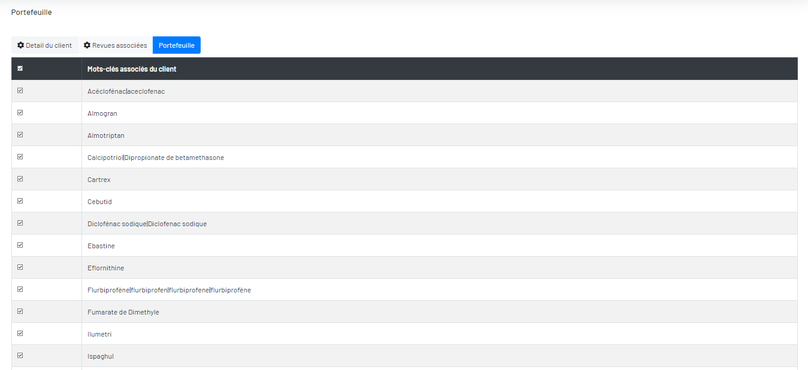
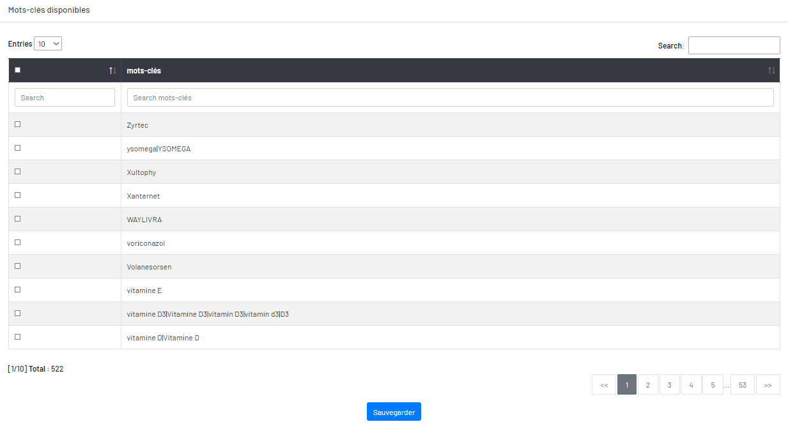

Mots-clés associés du client
Vous trouverez deux tableaux. En haut c’est le tableau de mots-clés associées.

En bas c’est le tableau de mots-clés non associées.

Vous pouvez les sélectionner pour les associer ou les dissocier par cocher ou décocher, puis cliquez sur le bouton « Sauvegarder » pour le sauvegarder.